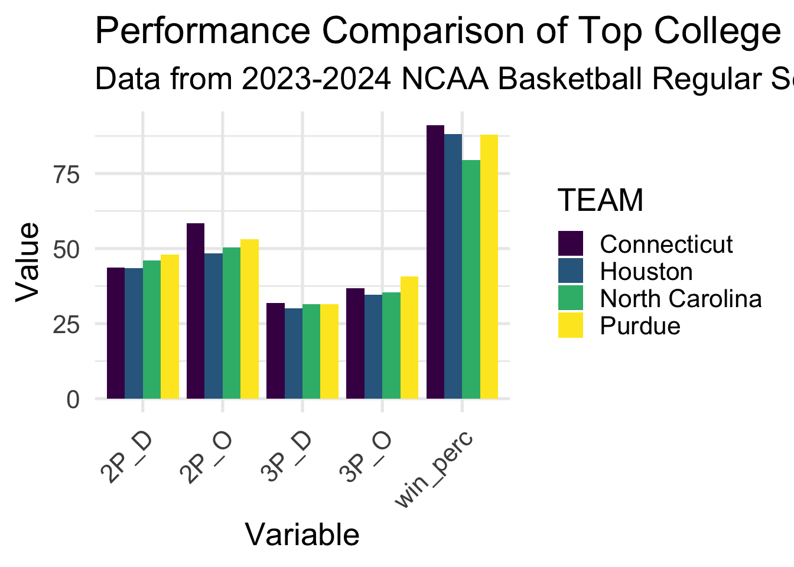
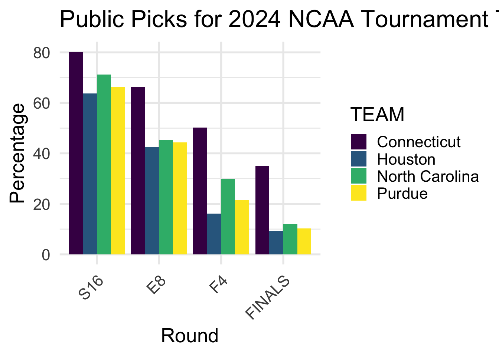

# load in data
library(readr)
cbb24 <- read_csv("cbb24.csv")
library(tidyverse)
# let's add a win percentage variable to cbb24
cbb24 <- cbb24 |> mutate(win_perc = W / G * 100)STAT334 Final Project
Abstract
In this project, we aim to explore NCAA basketball teams and their results from the 2023-2024 season. We use data that has various statistics from the 2023-2024 NCAA basketball regular season. We also use data that has predictions made by the public as to how each team will do in the 2024 NCAA tournament. Our goal is to combine these data sets into a shiny app and offer tables and visuals to explore how teams have performed this last season, and how the public thought they would perform in the 2023-2024 NCAA tournament. The code for the shiny app is in the app.R file in this repository.
Introduction
Data
We are going to look at two separate datasets in this project.
The first is the “College Basketball Dataset” from Kaggle by Andrew Sundberg, which contains data from various seasons of Division 1 college basketball. At the time of this writing, the csv contains data from the 2023-2024 regular season without any data from the NCAA tournament this year. We are going to be using the cbb24.csv for our analysis, as it contains data on all Division 1 NCAA college basketball teams for the 2023-2024 regular season. The link to the Kaggle dataset can be found here. Variables from this dataset are:
RK: The ranking of the team at the end of the regular season according to barttorvikTEAM: The name of the teamCONF: The conference the team is inG: The number of games the team played in the regular seasonW: The number of wins the team had in the regular seasonADJOE: Adjusted offensive efficeincy (points scored per 100 possessions vs avg D1 defense)ADJDE: Adjusted defensive efficiency (points allowed per 100 possessions vs avg D1 offense)BARTHAG: Power rating from barttorvik (chance of beating avg D1 team)EFG_O: Effective field goal percentage shotEFG_D: Effective field goal percentage allowedTOR: Turnover percentage allowed (turnovers per 100 plays)TORD: Turnover percentage forced (turnovers per 100 plays)ORB: Offensive rebound percentageDRB: Defensive rebound percentageFTR: Free throw rateFTRD: Free throw rate allowed2P_O: Two point percentage shot2P_D: Two point percentage allowed3P_O: Three point percentage shot3P_D: Three point percentage allowedADJ_T: Adjusted tempo (possessions per 40 minutes)SEED: The seed the team was given in the 2024 NCAA tournament
Let’s look at what the four 1 seeds in the tournament’s rows look like in the cbb24 dataset.
| RK | TEAM | CONF | G | W | ADJOE | ADJDE | BARTHAG | EFG% | EFGD% | TOR | TORD | ORB |
|---|---|---|---|---|---|---|---|---|---|---|---|---|
| 1 | Houston | B12 | 34 | 30 | 119.2 | 85.5 | 0.9785 | 49.7 | 44.0 | 13.7 | 24.7 | 36.9 |
| 2 | Connecticut | BE | 34 | 31 | 127.1 | 93.6 | 0.9712 | 57.1 | 45.1 | 14.9 | 16.2 | 36.5 |
| 3 | Purdue | B10 | 33 | 29 | 126.2 | 94.7 | 0.9644 | 56.0 | 47.7 | 16.5 | 14.0 | 37.4 |
| 9 | North Carolina | ACC | 34 | 27 | 116.8 | 93.2 | 0.9305 | 51.3 | 46.4 | 14.4 | 14.9 | 32.8 |
| DRB | FTR | FTRD | 2P_O | 2P_D | 3P_O | 3P_D | ADJ_T | WAB | SEED | win_perc |
|---|---|---|---|---|---|---|---|---|---|---|
| 30.2 | 29.9 | 39.0 | 48.4 | 43.4 | 34.7 | 30.0 | 63.3 | 10.6 | 1 | 88.23529 |
| 26.8 | 33.3 | 32.5 | 58.5 | 43.7 | 36.7 | 31.9 | 64.6 | 11.3 | 1 | 91.17647 |
| 24.7 | 42.8 | 23.0 | 53.2 | 48.1 | 40.8 | 31.4 | 67.6 | 11.0 | 1 | 87.87879 |
| 23.5 | 36.8 | 28.3 | 50.3 | 46.0 | 35.4 | 31.4 | 70.4 | 6.6 | 1 | 79.41176 |
Our second dataset is taken from Github’s tidytuesday, and is from Nishaan Amin’s Kaggle dataset and analysis linked here. The tidytuesday task specified two of Nishaan Amin’s many datasets, and the link to the Github site can be found here. These two dataframes contain data on past team results and the predictions the public has for this year’s tournament (year 2024). The datasets are titled team-results and public-picks. For this project, we will only be looking at the public-picks data. Variables from this dataset are:
YEAR: The year of the NCAA tournamentTEAMNO: The team numberTEAM: The name of the teamR64: The percentage of the public that picked the team win in the Round of 64R32: The percentage of the public that picked the team win in the Round of 32S16: The percentage of the public that picked the team win in the Sweet 16E8: The percentage of the public that picked the team win in the Elite 8F4: The percentage of the public that picked the team win in the Final FourFINALS: The percentage of the public that picked the team win in the Finals
# load in data
library(tidytuesdayR)
tuesdata <- tidytuesdayR::tt_load('2024-03-26')
Downloading file 1 of 2: `team-results.csv`
Downloading file 2 of 2: `public-picks.csv`public_picks <- tuesdata$'public-picks'Let’s look at the rows of the public_picks dataset that contain the four 1 seeds in the tournament.
| YEAR | TEAMNO | TEAM | R64 | R32 | S16 | E8 | F4 | FINALS |
|---|---|---|---|---|---|---|---|---|
| 2024 | 1067 | Connecticut | 98.41% | 93.59% | 80.22% | 66.20% | 50.27% | 34.92% |
| 2024 | 1056 | Houston | 97.01% | 85.69% | 63.77% | 42.54% | 16.15% | 9.27% |
| 2024 | 1038 | North Carolina | 97.55% | 88.07% | 71.16% | 45.40% | 29.98% | 12.10% |
| 2024 | 1033 | Purdue | 97.08% | 86.21% | 66.25% | 44.36% | 21.64% | 10.22% |
Goals
Our goal is to create a shiny app that allow users to explore the data from the 2023-2024 NCAA basketball season. We offer tables and visuals that allow users to see how teams performed in the regular season, and how the public thought they would perform in the 2024 NCAA tournament.
We are trying to answer the question of what can guide a team to having a successful regular season, and how that success translates to the NCAA tournament. We look at various statistics from the regular season data to see if there are any trends that can be seen in the data. We also look at the public picks data to see if there are any trends in the data that can be seen. We can see if there are any specific statistics or groupings of statistics that the public tends to pick more often than others.
Visualizations
First, we do some cleaning of the data to make it easier to work with. We are going to be looking at the tables and graphs generated in the shiny app. The code below generating all visualizations is static and will not be run in the shiny app. It is only here to show the visualizations that will be in the shiny app.
library(tidyverse)
library(shiny)
## let's add a win percentage variable to cbb24
cbb24 <- cbb24 |> mutate(win_perc = W / G * 100)
## Let's convert the percentages to numeric in public picks
public_picks[, c("R64", "R32", "S16", "E8", "F4", "FINALS")] <-
lapply(public_picks[, c("R64", "R32", "S16", "E8", "F4", "FINALS")],
function(x) as.numeric(sub("%", "", x)))Regular Season Statistics Plot
## Visualization 1: cbb24 filtered for specific teams and specific stats
cbb24_top_teams <- cbb24 |>
filter(TEAM %in% c("Houston", "Connecticut", "Purdue", "North Carolina")) |>
select(TEAM, win_perc, '2P_O', '2P_D', '3P_O', '3P_D')
cbb24_top_teams_long <- pivot_longer(cbb24_top_teams,
cols = -TEAM,
names_to = "Variable",
values_to = "Value")
ggplot(cbb24_top_teams_long, aes(x = Variable, y = Value, fill = TEAM)) +
geom_bar(stat = "identity", position = "dodge") +
labs(x = "Variable", y = "Value",
title = "Performance Comparison of Top College Basketball Teams",
subtitle = "Data from 2023-2024 NCAA Basketball Regular Season") +
theme_minimal(base_size = 20) +
theme(axis.text.x = element_text(angle = 45, hjust = 1)) +
scale_fill_viridis_d()
This visual shows the performance of college basketball teams in the 2023-2024 regular season. We have selected the 4 teams that have been given the 1 seed in the tournament, Houston, Connecticut, Purdue, and North Carolina. We can see how these 4 teams compare in various statistics. Statistics we have chosen here are 2-point field goal percentage allowed (2P_D), offensive 2-point field goal percentage (2P_O), 3-point field goal percentage allowed (3P_D), offensive 3-point field goal percentage (3P_O), and win percentage (win_perc). The shiny app allows users to change what teams and statistics they want to see in this visual.
Regular Season Statistics Table
cbb24_top_teams |>
arrange(desc(win_perc)) |>
kable() |>
kable_styling(full_width = FALSE,
font_size = 23)| TEAM | win_perc | 2P_O | 2P_D | 3P_O | 3P_D |
|---|---|---|---|---|---|
| Connecticut | 91.17647 | 58.5 | 43.7 | 36.7 | 31.9 |
| Houston | 88.23529 | 48.4 | 43.4 | 34.7 | 30.0 |
| Purdue | 87.87879 | 53.2 | 48.1 | 40.8 | 31.4 |
| North Carolina | 79.41176 | 50.3 | 46.0 | 35.4 | 31.4 |
The table shows the performance of college basketball teams in the 2023-2024 regular season. This table accompanies the graph above, and provides numerical values for the statistics shown in the graph.
Public Picks Plot
rounds_order <- c("R64", "R32", "S16", "E8", "F4", "FINALS")
public_picks_top_teams <- public_picks |>
filter(TEAM %in% c("Houston", "Connecticut", "Purdue", "North Carolina")) |>
select(TEAM, S16, E8, F4, FINALS)
public_picks_top_teams_long <- pivot_longer(public_picks_top_teams,
cols = -TEAM,
names_to = "Round",
values_to = "Percentage")
public_picks_top_teams_long$Round <- factor(public_picks_top_teams_long$Round,
levels = rounds_order)
ggplot(public_picks_top_teams_long,
aes(x = Round, y = Percentage, fill = TEAM)) +
geom_bar(stat = "identity", position = "dodge") +
labs(x = "Round", y = "Percentage",
title = "Public Picks for 2024 NCAA Tournament Teams") +
theme_minimal(base_size = 20) +
theme(axis.text.x = element_text(angle = 45, hjust = 1)) +
scale_fill_viridis_d()
This visual shows the public picks for the 2024 NCAA tournament. Users of the shiny app can see how the public thinks different teams will perform in the tournament. Again, we have selected the 4 teams that have been given the 1 seed in the tournament, Houston, Connecticut, Purdue, and North Carolina, and can explore the public picks. The shiny app allows users to change what teams they want to see in this visual, by modifying the teams selected and what rounds they want to see.
Public Picks Table
public_picks_top_teams |>
arrange(desc(FINALS)) |>
kable() |>
kable_styling(full_width = FALSE,
font_size = 23)| TEAM | S16 | E8 | F4 | FINALS |
|---|---|---|---|---|
| Connecticut | 80.22 | 66.20 | 50.27 | 34.92 |
| North Carolina | 71.16 | 45.40 | 29.98 | 12.10 |
| Purdue | 66.25 | 44.36 | 21.64 | 10.22 |
| Houston | 63.77 | 42.54 | 16.15 | 9.27 |
The table shows the public picks for the 2024 NCAA tournament. This table accompanies the graph above, and provides numerical values for the percentages shown in the graph.
Conclusion
In conclusion, we have built a shiny app that allows users to explore the data from the 2023-2024 NCAA basketball season. We have provided tables and visuals that allow users to see how teams performed in the regular season, and how the public thought they would perform in the 2024 NCAA tournament. We can look at various statistics from the regular season data to see if there are any trends that can be seen in the data. We can also looked at the public picks data to see if there are any trends in the data that can be seen. We can see if there are any specific statistics or groupings of statistics that the public tends to pick more often than others.
We hope that this shiny app will be useful for anyone interested in exploring the data from the 2023-2024 NCAA basketball season, and can be easily adapted to explore other seasons of NCAA basketball.
If given more time, we would like to add more features to the shiny app. We would like to add another section of exploring data using the second tidytuesday dataset, team-results, that includes data on previous years of March Madness Tournament Data. We would like to add more visuals and tables that allow users to explore this data. And now that the tournament has completed, it would be interesting to see how the public picks compared to the actual results of the tournament.